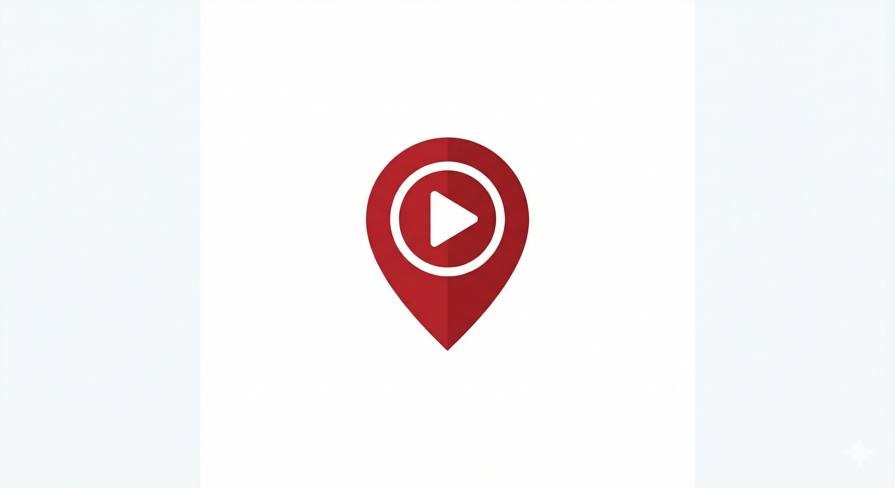

Hola, soy
Desarrollador de Software
Construyo aplicaciones web y móviles que combinan diseño cuidadoso con código limpio. Me enfoco en la experiencia del usuario y en soluciones que escalan.
Una selección de trabajos recientes. Haz clic en cualquier tarjeta para ver más detalles.
Mascota virtual interactiva con sistema de cuidado, estadísticas y eventos aleatorios. Lógica de juego construida con JS puro.
Visita mi GitHub para ver el resto del trabajo

Este mismo sitio. Canvas animado, carrusel responsive, modales de proyecto y diseño 100% vanilla.
Aplicación web para exploración y descubrimiento de contenido. Construida con TypeScript para mayor robustez y escalabilidad.
Sitio web personal. Uno de mis primeros proyectos — donde empezó todo.
Tecnologías con las que trabajo día a día.
Mi recorrido hasta aquí.
Proyectos web independientes para clientes locales y remotos. Diseño, desarrollo e implementación de principio a fin.
ActivoLancé mi primera aplicación con usuarios reales. Aprendí sobre ciclos de vida de producto, feedback real y la diferencia entre código que funciona y código que escala.
Primeras líneas de código. HTML, CSS y JavaScript. La curiosidad por entender cómo funcionan las cosas se convirtió en mi motor principal.
Soy Erick, desarrollador de software con enfoque en el producto completo — desde la interfaz hasta la base de datos. Me gusta construir cosas que la gente realmente use y que resuelvan problemas concretos.
Trabajo mejor en entornos donde hay autonomía, donde se puede iterar rápido y donde el código importa tanto como el resultado final.
¿Tienes un proyecto en mente o quieres colaborar?
Escríbeme y lo platicamos.